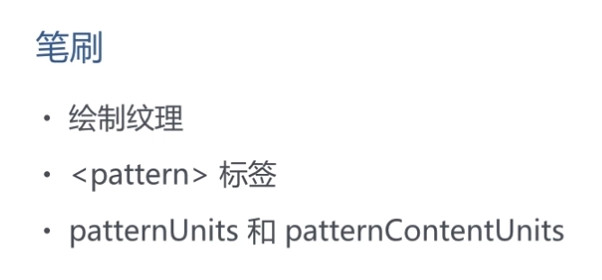

SVG笔刷
<pattern>元素定义模式。它用于以平铺方式填充图形元素。使用预定义的图形对一个对象进行填充或描边，就要用到pattern元素。pattern元素让预定义图形能够以固定间隔在x轴和y轴上重复（或平铺）从而覆盖要涂色的区域。先使用pattern元素定义图案，然后在给定的图形元素上用属性fill或属性stroke引用用来填充或描边的图案。
<pattern>元素定义模式。它用于以平铺方式填充图形元素。使用预定义的图形对一个对象进行填充或描边，就要用到pattern元素。pattern元素让预定义图形能够以固定间隔在x轴和y轴上重复（或平铺）从而覆盖要涂色的区域。先使用pattern元素定义图案，然后在给定的图形元素上用属性fill或属性stroke引用用来填充或描边的图案。